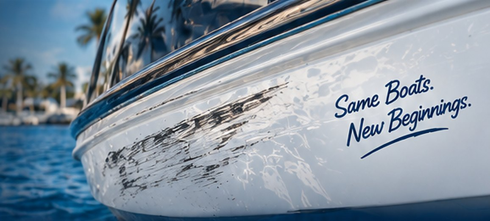
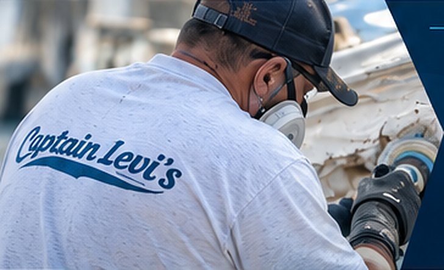

Remove unsightly dock rash, scuffs and abrasion marks from your boat’s gelcoat. Our expert repair process restores the damaged area, blends the finish, and color matches it seamlessly so your boat looks its best on the water.
Dock rash is one of the most common types of gelcoat damage. It can happen while docking, trailering, or from contact with pilings, docks and other boats. We carefully repair the damaged gelcoat, blend the finish, and color match the area so the repair is virtually invisible.

We use proven marine repair techniques and
a seamless, long-lasting finish.
We evaluate the depth of the scuff, gelcoat damage and determine the best repair method.
We sand, fill and repair the damaged area, feathering the edges for a seamless blend.
We precisely match your boat’s gelcoat color and gloss.
We polish the area to a smooth, like-new finish and apply protection for lasting results.
See how we remove dock rash and scuffs, restoring the original color, gloss and finish.
With over 50 years of fiberglass repair experience, we deliver high-quality results that keep your boat looking its best. From small cosmetic repairs to major restorations, we’re the team boaters across Tampa Bay trust.
It depends on how large and how deep the damage is and how involved the color match will be. Send us a few photos or have us take a look, and we’ll give you a free, no-obligation quote.
Yes. We tint the gelcoat to your hull, including finishes that have faded or oxidized over time, then blend the edges so the repair disappears into the surrounding color and gloss.
Light scuffs can often be taken care of in a single visit. Repairs that need filling and color-matched gelcoat take longer because each layer has to cure. We’ll give you a timeline with your quote.
Our goal is a repair you can’t find. We feather the edges, match the color and gloss, then wet sand and polish so the area blends with the rest of the hull.
Yes. If a scrape has cut through the gelcoat, we grind it back, fill it with marine-grade materials, then color match and polish it. See our deep gouge repair page for more.
Get a free quote or talk directly with Captain Dave about your boat.
Have dock rash or scuffs you want looked at, need a quote, or ready to schedule? Fill out the form or give us a call — we’ll get back to you as soon as possible. Your boat deserves the best, and we’re here to make it happen.
Tell us a little about your project and we’ll get back to you quickly.